A Wormhole Between Two Math Classes
How a remark in class led me through null spaces and chemical equations to a tumor simulation where every cell solves a linear algebra problem.
Try the simulation: warburg-sim.vercel.app
A remark in math class
I was sitting next to my friend in my math class when my professor said something that stuck with me. We were finding every solution to a linear Diophantine equation: an equation like 6x + 10y = 8, where x and y have to be whole numbers. My professor pointed out that the process used to find every solution of this equation is parallel to the process used to show that Ax = b has infinitely many solutions.
That was a big moment for me. Two classes I had been treating as separate were doing the same thing. This bridging excited me. Things started to make sense, and I got inspired to learn more.
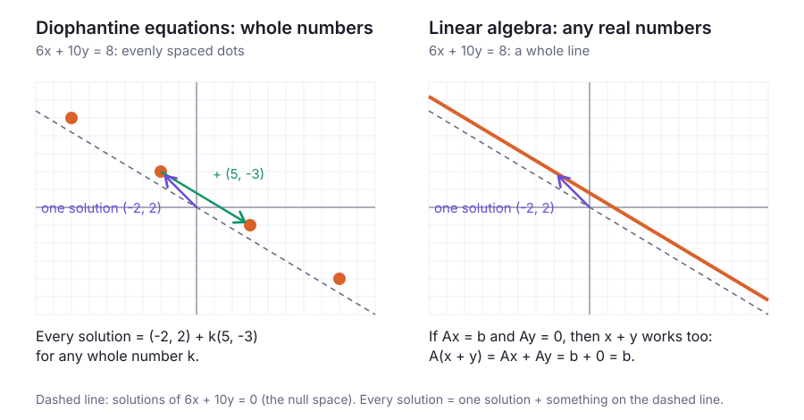
This blog tells the story of the rabbit hole I fell into after that eye-opening moment. What started with one pattern shared by two math classes ends with two biological applications:
- A cancer simulation where every cell on a grid solves a small linear algebra problem to decide how to make energy. It uses a computational biology method called flux balance analysis, run on a cellular automaton inspired by my programming class.
- Balancing chemical equations like photosynthesis and cellular respiration, inspired by my Modern Biology class.
I'll go step by step, with the math, pictures, and a few diagrams so you can experience the process with me.
One solution plus the "= 0" solutions
Here is the idea behind my professor's remark, worked out on 6x + 10y = 8.
Subtract two solutions. Both (−2, 2) and (3, −1) solve the equation: 6(−2) + 10(2) = 8 and 6(3) + 10(−1) = 8. Their difference is (5, −3), and 6(5) + 10(−3) = 0. The 8s cancel. The difference of any two solutions solves the "= 0" version of the equation, 6x + 10y = 0.
Linear algebra says the same thing in one line. If Ax₁ = b and Ax₂ = b, then A(x₁ − x₂) = Ax₁ − Ax₂ = b − b = 0. So x₁ − x₂ is in the null space of A: the set of every vector that A sends to zero.
Run the argument backwards and you get every solution at once: start at one solution and add anything from the null space.
every solution = one particular solution + something from the null space
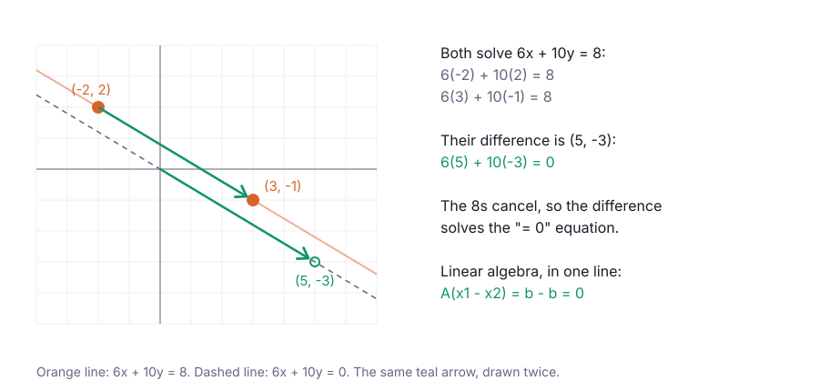
Biology as a null space
In my Modern Biology class we learned the two reactions that move energy between living things:
- Photosynthesis: 6 CO₂ + 6 H₂O → C₆H₁₂O₆ (glucose) + 6 O₂, powered by light
- Cellular respiration: C₆H₁₂O₆ + 6 O₂ → 6 CO₂ + 6 H₂O, releasing energy the cell stores as ATP
They are exact reverses of each other, and it turns out linear algebra shows up twice here: once in balancing each equation, and again in describing how a cell runs both reactions at once.
Balancing one equation
Write the unknown coefficients as x₁ through x₄:
x₁ CO₂ + x₂ H₂O → x₃ C₆H₁₂O₆ + x₄ O₂
Each element gives one equation:
- Carbon: x₁ = 6x₃
- Hydrogen: 2x₂ = 12x₃
- Oxygen: 2x₁ + x₂ = 6x₃ + 2x₄
If you move everything to one side, the equations can combine to form a matrix, A, with one row per element and one column per molecule (reactants counted +, products −). When you balance the coefficients, you get the solutions of Ax = 0. That's right! Balancing a chemical equation is just like finding a null space.
After doing row reduction for this particular equation, you're left with one free variable, so the null space is a single line: every multiple of (1, 1, 1/6, 1). While one CO₂ plus one H₂O making one sixth of a glucose and one O₂ is perfectly balanced mathematically, chemically it is nonsense. There is no such thing as a sixth of a molecule. Chemistry needs whole numbers, so we want the whole-number points on the null space line. That is the Diophantine side of this application circling back. To get there, we simply need to multiply by 6 (the least common multiple of the denominators). That gives (6, 6, 1, 6), the coefficients from my biology class. (12, 12, 2, 12) is balanced too, but it is just twice as much of the same reaction.
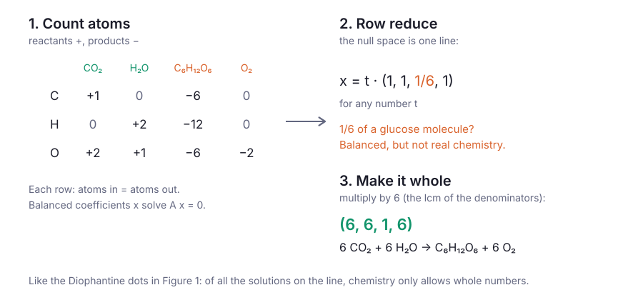
Respiration sits on the same null space line because it's the same equation in reverse: C₆H₁₂O₆ + 6 O₂ → 6 CO₂ + 6 H₂O.
Putting the reactions side by side
Once each reaction is balanced, the two of them fit neatly in one matrix. Take the matrix S with one row per molecule and one column per reaction. Each entry says how many of that molecule the reaction makes (+) or uses up (−). Photosynthesis makes 1 glucose and 6 O₂ and uses 6 CO₂ and 6 H₂O, so its column is (+1, +6, −6, −6). Respiration's column is the exact opposite.
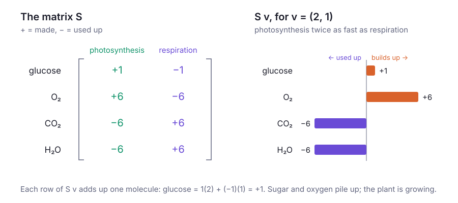
S only says what each reaction does. To say how fast each reaction runs, we need to use a vector v with one entry per reaction. Vector v represents something called the reaction's "flux". Multiplying gives Sv: how fast each molecule's amount is changing. For glucose, that's (+1)(photosynthesis speed) + (−1)(respiration speed). Another way to see it: Sv is just each reaction's column, weighted by how fast that reaction runs.
When nothing piles up and nothing runs out, every entry of Sv is zero. Biologists call this steady state, and in matrix form it is Sv = 0. That makes every steady state a vector in the null space of S. For this matrix the null space is easy to see: Sv = 0 exactly when photosynthesis and respiration run at the same speed, so it is every multiple of (1, 1). Plant biologists have a name for this balance: the light level where a plant's photosynthesis exactly matches its respiration is its light compensation point.
Fermentation and the NAD⁺ problem
Unfortunately, there's a problem with our current matrix equations. For those of you who paid attention in high school biology, you'll know that breaking down glucose isn't one step. It starts with glycolysis, and then it takes one of two paths: aerobic or anaerobic respiration. This complicates our matrix.
Before I explain the changes to our matrix, I'll briefly review the biology, which I'm sure everyone remembers.
First, glycolysis splits one glucose into two pyruvate and makes 2 ATP. This is facilitated by a helper molecule called NAD⁺, which turns into NADH during this first step. Therein lies the rub. A cell has a limited supply of NAD⁺, so it has to recycle NADH back into NAD⁺. There are two ways to do that:
- Aerobic respiration (with oxygen): the mitochondria use O₂ as an "electron acceptor" waiting at the end of a tunnel called the "electron transport chain." NADH molecules are shot through and forced to give up an electron, which indirectly pulls off a H⁺ ion as well. Thus NADH is successfully converted back into NAD⁺. This whole process makes about 30 more ATP.
- Anaerobic respiration (without oxygen): there is no "electron acceptor," so the cell uses a secondary strategy called fermentation. Your cell sacrifices pyruvate, transferring NADH's electrons to it, thereby brute-force converting NADH back into NAD⁺. But as a result, your cell produces lactate (lactic acid) as a byproduct, and no extra ATP is generated.
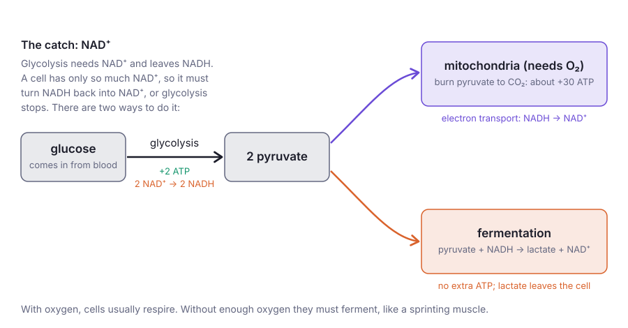
Now the whole network goes into one matrix S: five molecules (glucose, pyruvate, NAD⁺, NADH, lactate) and six reactions (glucose coming in, glycolysis, electron transport, fermentation, pyruvate burned in the mitochondria, and lactate leaving the cell). Steady state is again Sv = 0. After completing some row reduction on matrix S, you see it has rank 4, so its null space has 6 − 4 = 2 dimensions. Its whole-number basis is two vectors:
- respire = (1, 1, 2, 0, 2, 0): one glucose all the way through the mitochondria. 32 ATP, no lactate, uses 6 O₂.
- ferment = (1, 1, 0, 2, 0, 2): one glucose fermented into lactate. 2 ATP, 2 lactate, no O₂.
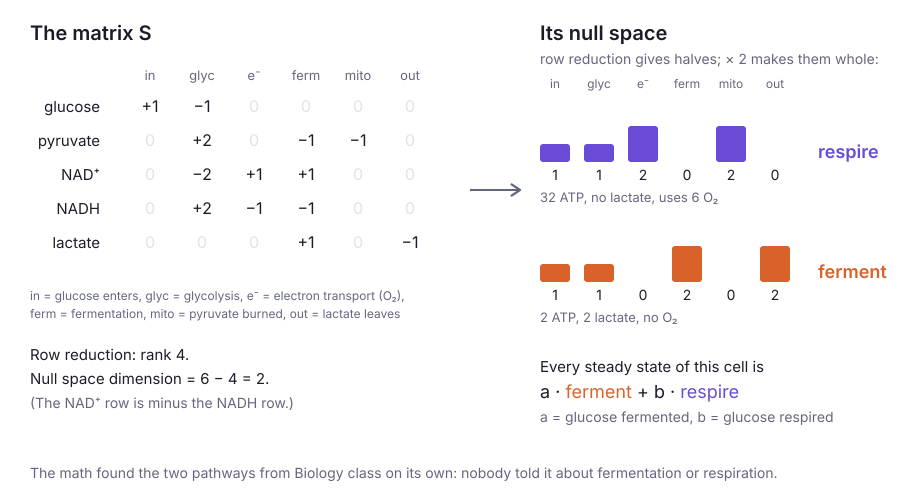
So every steady state of this cell is a · ferment + b · respire, where a is the glucose fermented and b is the glucose respired. Everything about the cell follows from those two numbers: it makes 2a + 32b ATP, gives off 2a lactate, and uses 6b oxygen. The share of its glucose that it ferments, a / (a + b), will be important later. I'll call it the cell's Warburg index.
The rank of 4 hides one more thing. The NAD⁺ row of S is exactly minus the NADH row, so adding those two rows gives zero: no reaction changes NAD⁺ + NADH. The cell can only swap NAD⁺ for NADH and back, never make more. That one line of linear algebra is the whole reason fermentation exists.
How a cell picks its point: flux balance analysis
The last section gave a whole plane of steady states, every a · ferment + b · respire. Which one does a cell actually use? Computational biologists answer this with flux balance analysis (FBA): assume the cell picks the steady state that best achieves a goal, within its limits.[4] Here the goal is the most ATP, and there are three limits:
- Glucose: a + b ≤ G, the glucose the cell can take in.
- Oxygen: each respired glucose needs 6 O₂: 6b ≤ O, the oxygen available.
- Mitochondria: each respired glucose sends 2 pyruvate into the mitochondria: 2b ≤ M, the mitochondria's capacity.
The goal is an optimization problem: how do we make 2a + 32b as large as possible? Geometrically, each limit is a line that cuts off part of the (a, b) plane, and the resulting area represents every choice the cell can afford.
How do you find the "best" choice? Well, linear programming tells us that a linear goal is always largest at a corner. Slide along any edge and the ATP changes steadily in one direction, so you can always do at least as well by sliding to the end of the edge. The best corner here has a simple rule: respire as much as every limit allows, then ferment whatever glucose is left.
b = min(G, O/6, M/2), a = G − b
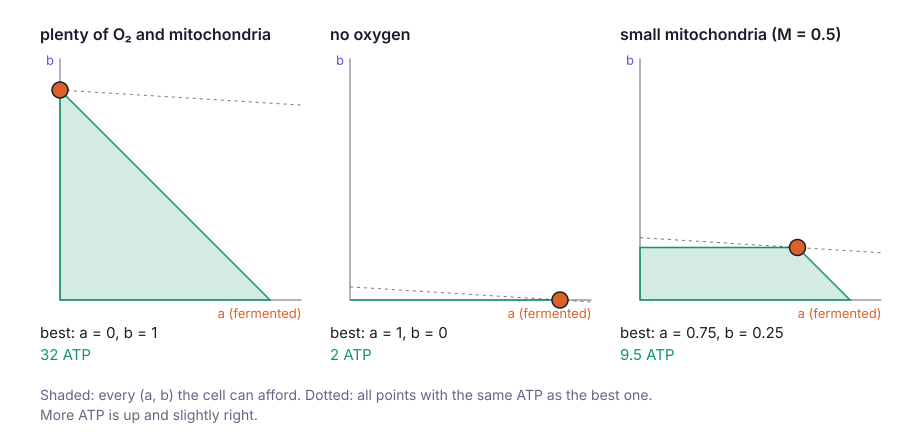
The third cell is the interesting one. Its mitochondria fill up, so it ferments the rest of its glucose even with plenty of oxygen around. That is the Warburg effect mathematically reproduced.
When should a cell invest in mitochondria?
Fewer mitochondria explain how a cell could end up fermenting, but not why it wouldn't just build more. One hypothesis from research on bacteria is a protein budget: a cell can only make so much protein, and it has to split that budget between glucose transporters and mitochondria. Mitochondria are big, complicated machines, so each unit of mitochondria costs more than a transporter.
Here's the math I made up to try to explain it:
- Count the cost per glucose.
- Respiring one glucose needs a transporter plus two units of mitochondria, and earns 32 ATP.
- Fermenting one glucose needs only the transporter, and earns 2 ATP.
- Say a unit of mitochondria costs 10 times as much as a transporter. Then respiring earns 32 ATP for 21 units of budget, about 1.5 ATP per unit, while fermenting earns 2 ATP per unit. Per unit of budget, fermenting wins.
If you're a more visual learner, I also built this interactive diagram to demonstrate when a cell should route its resources toward its mitochondria, and when it should spend them on something else, depending on how much oxygen and glucose are around:
Four things to try:
- Plenty of glucose and oxygen (the starting settings). The best split puts 0% of the budget on mitochondria: pure fermentation makes 20 ATP. That is the Warburg effect with oxygen present, produced by the budget alone.
- Drag glucose down to about 1. The best split jumps to about 90% on mitochondria. When glucose is scarce, extra transporters are useless, so the budget is better spent getting 32 ATP out of each precious glucose. Scarce food favors efficiency; plentiful food favors speed.
- Drag oxygen to 0. Mitochondria become worthless and the best split goes back to 0%: ordinary fermentation.
- Watch the dashed line at 20 ATP, the energy a cell needs to divide in my simulation. With plenty of glucose, only the fermenting split reaches it.
In the matrix, the budget is just one more linear inequality on the fluxes: g + 2k·b ≤ B, where g is the glucose taken in, k is the cost of mitochondria, and B is the total budget.
From one cell to a tissue
So far everything has been about one cell, but a tumor is made of thousands, sharing oxygen, glucose, and acid. When I started thinking about how to simulate the Warburg effect, my first idea was a cellular automaton, something I learned in my programming class. Specifically, two projects from that class ended up shaping this simulation.
The first is my spatial games project, which I wrote about in last month's post.[8] It is a grid of squares where every square follows the same simple rule based on its neighbors, and every square updates at the same moment. Here, each square is a cell (healthy, tumor, or empty) or a capillary, and every cell follows the same rule: solve its own FBA problem, then live, die, or divide.
The second is the Gray–Scott model, a reaction–diffusion model we coded for homework. I borrowed its strategy of diffusion to simulate spreading chemicals: oxygen, glucose, and lactate each live on the grid as numbers, and every step each square shares some of what it has with its neighbors, using weights from a 3 × 3 grid.
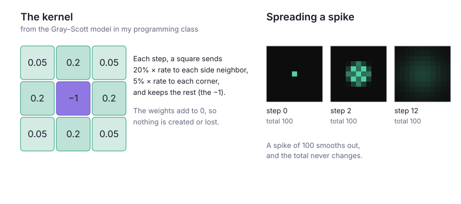
Each step of the simulation then goes like this:
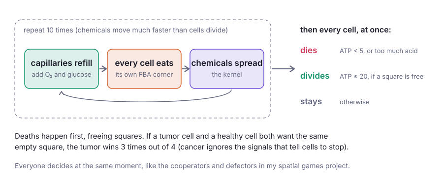
Every decision, and why
A simulation is a pile of decisions. Here are all the ones that matter, including the ones I made along the way:
| Decision | What I chose | Why |
|---|---|---|
| The grid | 60 × 60 squares, one cell per square. Edges are closed, so nothing leaks off the grid. | Big enough to watch a tumor grow, small enough to run in a browser. Closed edges mean the total amount of each chemical is only changed by capillaries and cells. |
| Neighbors | The 8 squares around each square | The same neighborhood as my spatial games project. |
| How chemicals spread | The Gray–Scott kernel. Oxygen spreads at rate 1, glucose and lactate at 0.5. | Taken from my programming class. Glucose and lactate are bigger molecules than oxygen, so they spread more slowly. |
| Blood supply | A capillary every 6 squares. Capillaries reset oxygen to 10 and glucose to 5, and wash lactate away. | Real tissue is threaded with capillaries, and cells too far from them starve. My first version had a single blood vessel along one edge, and almost all the tissue died. |
| Speed of chemicals vs. cells | Each step runs 10 rounds of "refill, eat, spread" | Oxygen crosses the gap between capillaries in seconds, while a cell takes about a day to divide. Hybrid models like this one handle the gap the same way, with many chemical updates per cell update. |
| How hungry cells are | Each round, a cell eats 2% of a full step's appetite | Tuned so that healthy tissue alone, with no tumor, survives indefinitely. I checked: 100% of healthy cells were alive after 200 steps, and the answer didn't change with 20 or 40 rounds instead of 10. |
| How each cell makes energy | FBA, the corner rule from the last section | The whole point of the project: every cell solves Sv = 0 under its own limits. |
| Life and death | A cell dies below 5 ATP and divides at 20 ATP or more | Simple thresholds. A healthy cell with plenty of oxygen makes 32 ATP, enough to divide; a cell that can only ferment makes 2, not enough to survive. |
| Acid | A cell dies when lactate around it passes its tolerance: 1 for healthy cells, 3 for tumor cells | My choice: a hard cutoff, and acid hurts everyone, but tumor cells tolerate more, as real tumors adapt to acid. |
| Where acid goes | Capillaries wash it away | My choice. Blood carries lactate off, so acid builds up far from capillaries. |
| Tumor glucose uptake | 8 times a healthy cell's (in the first scenario) | My choice. Real tumors take up so much glucose that doctors find them with PET scans, which track radioactive glucose. A fermenting cell needs it: 2 ATP per glucose only reaches 20 ATP with a lot of glucose. |
| Who gets an empty square | If a tumor cell and a healthy cell both want it, the tumor wins 3 times out of 4. Two cells of the same kind: 50/50. | My choice. Cancer cells ignore the signals that tell normal cells to stop dividing. |
| Order of events | Every cell decides at once. Deaths happen before divisions. | Like spatial games. Deaths free up squares that dividing cells can use in the same step. |
| Evolution | When a tumor cell divides, its daughter's budget split changes a little at random. Healthy cells copy exactly. | My choice. Cancer cells are genetically unstable. |
| The budget | Budget 20, with mitochondria costing 10 times as much as a transporter | Made-up numbers, chosen so the trade-off from the last section is visible. |
What the simulation showed
You can run everything below yourself at warburg-sim.vercel.app. The app asks three questions, and each one has a "What did I just see?" button that explains the result. Here is what I found.
1. Can a tumor's acid clear out healthy tissue?
In the first scenario, the tumor ferments about 97% of its glucose and gives off lactate. Wherever the acid passes 1, healthy cells die, leaving empty squares that the tumor divides into. By step 120, every healthy cell is gone. The tumor itself only survives near capillaries, where blood washes its acid away. Everywhere else it keeps poisoning itself.
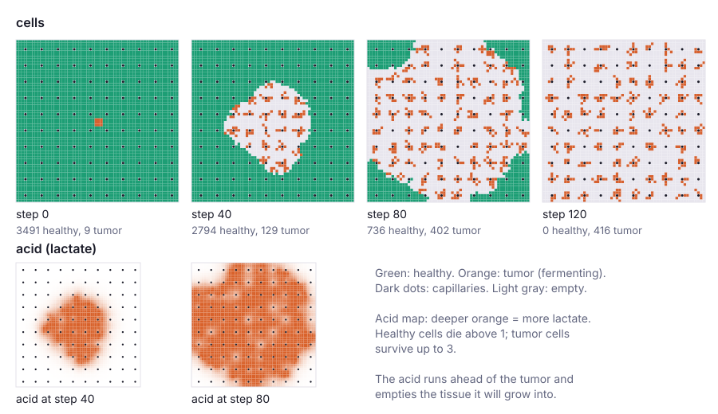
The outcome turned out to hinge on one number: how much acid healthy cells can tolerate. I ran each setting three times on a smaller grid:
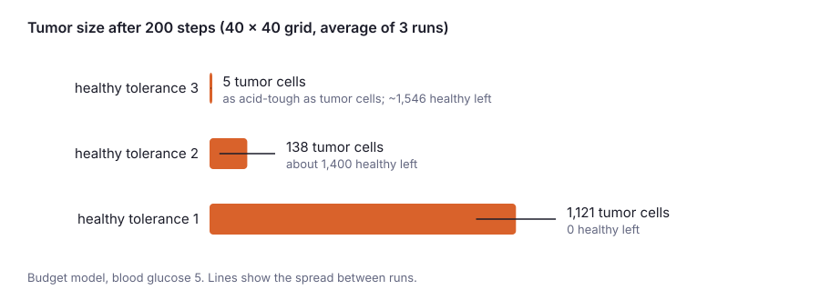
2. Does evolution favor fermenting?
In the second scenario, every tumor cell splits a budget between glucose transporters and mitochondria, and each daughter cell inherits its parent's split with a small random change. Cells whose split works better leave more descendants. To check that any change was real selection and not just luck, every tumor cell also carried a "marker": a number that changes randomly at each division the same way, but doesn't do anything.
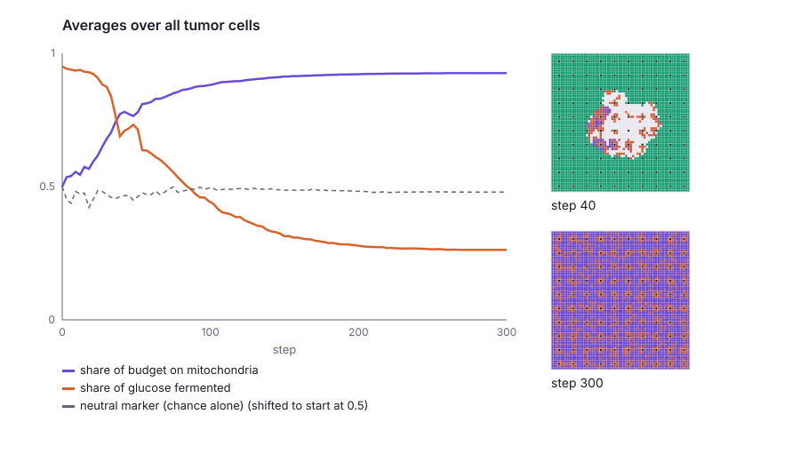
Early on, the tumor fermented to inflict damage (its acid cleared out the healthy tissue first). However, evolution pushed the tumor away from fermenting in every run where the tumor grew. So in my model, fermenting is a temporary weapon: useful for invading, then abandoned. Strategically, the tumor settled with its acid just under 3: the most it can survive, but still enough to keep healthy cells from growing back.
3. What if tumor cells always grab the fastest energy?
In the third scenario, every tumor cell re-decides its budget split each step, always picking whatever makes the most energy right now. Fermenting makes 40 ATP versus 35 for a mixed split, so every cell picks pure fermentation. That dumps so much lactate onto each cell's own square that the acid jumps above 5, past the tumor's limit of 3, and the whole tumor dies in a single step. Healthy cells then grow back onto the space.
The greedy rule only sees energy and never counts the acid it makes. Evolution in question 2 does count it, because cells that poison themselves leave no descendants. Therefore, a choice that looks best in the moment can be self-destructive.
Why my model doesn't match real tumors
Real tumors keep fermenting, while mine evolve away from it. So my model is missing something. The leading candidates:
- Acid tolerance that evolves. Real tumors adapt to acid. In my model tolerance is fixed at 3, so fermenting always partly hurts the tumor.
- Glucose as building material. Dividing cells need glucose's carbon to build new cells, not just energy.[3] My cells only count ATP.
- Pushing. Real tumors also grow by pushing into tissue. Mine can only grow into empty squares.
- Patchy blood supply. Real tumors outgrow their blood vessels and have low-oxygen cores. The 2024 study suggests cells ferment to stay ready for exactly that.[7]
Any of these could tip evolution back toward fermenting. Each is a good next experiment.
What's next
This project started with one remark from my professor and ended with a cancer simulation.
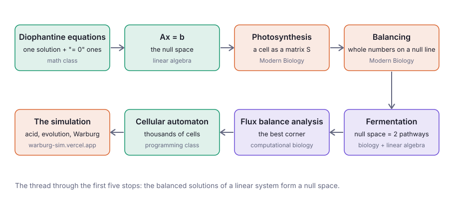
The most interesting part for me was seeing linear algebra applied in biology. I always knew linear algebra was used in AI, for example to compress information into vectors, but I never knew it could be applied to medicine. Watching a cell's chemistry turn into a null space makes me even more passionate about computational biology, and more curious about what else I could do with it.
The hardest part was wrapping my brain around the connection between my classes and then applying it to something new: figuring out how to write photosynthesis and cellular respiration as matrices, and then how to turn that into a cellular automaton. However, going through it step by step with Claude helped me understand each piece, and now I'm happy I understand it well enough to explain it to you as well.
In the future, I want to learn way more about how vectors are used to build AI models. I feel like this project hasn't even begun to scratch the surface of AI architecture and linear algebra. I wonder if I can bring the state-of-the-art concepts from that parallel field back into CompBio one day. I can't wait to go study that and then see how far I can push this application. This project is only the first stepping stone.
What started as a connection between two math classes has opened into a brand-new universe I want to explore. If you want to see where it led, try the simulation yourself at warburg-sim.vercel.app.
References
[1] E. Brunk, S. Sahoo et al., "Recon3D enables a three-dimensional view of gene variation in human metabolism," Nature Biotechnology 36, 272–281 (2018). https://doi.org/10.1038/nbt.4072 ↩
[2] O. Warburg, "On the origin of cancer cells," Science 123, 309–314 (1956). https://doi.org/10.1126/science.123.3191.309 ↩
[3] M. G. Vander Heiden, L. C. Cantley, C. B. Thompson, "Understanding the Warburg effect: the metabolic requirements of cell proliferation," Science 324, 1029–1033 (2009). https://doi.org/10.1126/science.1160809 ↩
[4] J. D. Orth, I. Thiele, B. Ø. Palsson, "What is flux balance analysis?" Nature Biotechnology 28, 245–248 (2010). https://doi.org/10.1038/nbt.1614 ↩
[5] M. Basan, S. Hui, H. Okano et al., "Overflow metabolism in Escherichia coli results from efficient proteome allocation," Nature 528, 99–104 (2015). https://doi.org/10.1038/nature15765 ↩
[6] B. J. Sánchez et al., "Improving the phenotype predictions of a yeast genome-scale metabolic model by incorporating enzymatic constraints," Molecular Systems Biology 13, 935 (2017). https://doi.org/10.15252/msb.20167411 ↩
[7] Y. Shen et al., "Mitochondrial ATP generation is more proteome efficient than glycolysis," Nature Chemical Biology 20, 1123–1132 (2024). https://doi.org/10.1038/s41589-024-01571-y ↩
[8] "Growing a Second Brain," October 2026. https://cammm123.github.io/CameronWebsite/blog/growing-a-second-brain.html ↩
[9] R. H. Thomlinson, L. H. Gray, "The histological structure of some human lung cancers and the possible implications for radiotherapy," British Journal of Cancer (1955). https://doi.org/10.1038/bjc.1955.55 ↩
[10] R. A. Gatenby, E. T. Gawlinski, "A reaction-diffusion model of cancer invasion," Cancer Research 56, 5745–5753 (1996). ↩
[11] I. F. Robey et al., "Bicarbonate increases tumor pH and inhibits spontaneous metastases," Cancer Research 69, 2260–2268 (2009). https://pubmed.ncbi.nlm.nih.gov/19276390/ ↩
[12] Phase I trial of the MCT1 inhibitor AZD3965 in patients with advanced cancer, Clinical Cancer Research (2023). https://pmc.ncbi.nlm.nih.gov/articles/PMC7614436/ ↩
[13] Z. Lin et al., "Evolutionary-scale prediction of atomic-level protein structure with a language model," Science 379, 1123–1130 (2023). https://doi.org/10.1126/science.ade2574 ↩
— cameron · all posts